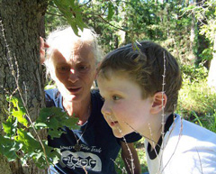
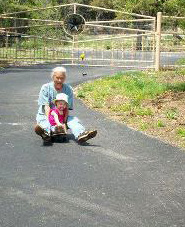

Debra Brackin Wardell
June 4, 1952--February 5, 2012Debra earned a Bachelor's Degree in Photojournalism and a Master's Degree in Social Work at University of Texas. She was active in the fields of human rights all her life.
She was a volunteer or staff of: CURE (criminal justice reform), Bastrop County Women's Shelter (aka Family Crisis Center), Rural AIDS Services Program, Women's Advocacy Project and one of the original founders of Advocacy Outreach.
She helped many people access their disability benefits during her years working for Disability Determination Services. She traveled the world as a child of military parents and in later years returned to Greece and Syria.
Debra was a strong advocate of women's rights and was particularly interested in the rights of women in the Middle East. She was fearless in her approach to life and an inspiration to many. She found solace in the river spirits.